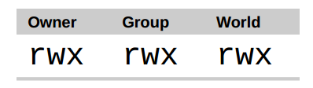
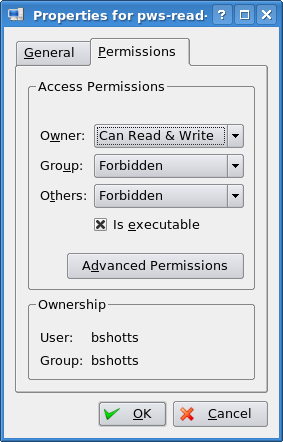
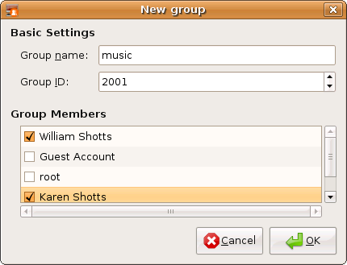

Operating systems in the Unix tradition differ from those in the MS-DOS tradition in that they are not only multitasking systems, but also multi-user systems, as well. What exactly does this mean? It means that more than one person can be using the computer at the same time. While a typical computer will likely have only one keyboard and monitor, it can still be used by more than one user. For example, if a computer is attached to a network or the Internet, remote users can log in via ssh (secure shell) and operate the computer. In fact, remote users can execute graphical applications and have the graphical output appear on a remote display. The X Window System supports this as part of its basic design.
Unix 傳統中的作業系統不同於那些 MS-DOS 傳統中的系統，區別在於它們不僅是多工系統，而且也是 多使用者系統。這到底意味著什麼？它意味著多個使用者可以在同一時間使用同一臺計算機。然而一個 典型的計算機可能只有一個鍵盤和一個監視器，但是它仍然可以被多個使用者使用。例如，如果一臺 計算機連線到一個網路或者因特網，那麼遠端使用者透過 ssh（安全 shell）可以登入並操縱這臺電腦。 事實上，遠端使用者也能執行圖形介面應用程式，並且圖形化的輸出結果會出現在遠端的顯示器上。 X 視窗系統把這個作為基本設計理念的一部分，並支援這種功能。
The multi-user capability of Linux is not a recent “innovation,” but rather a feature that is deeply embedded into the design of the operating system. Considering the environment in which Unix was created, this makes perfect sense. Years ago, before computers were “personal,” they were large, expensive, and centralized. A typical university computer system, for example, consisted of a large central computer located in one building and terminals which were located throughout the campus, each connected to the large central computer. The computer would support many users at the same time.
Linux 系統的多使用者效能，不是最近的“創新”，而是一種特性，它深深地嵌入到了 Linux 作業系統的 設計過程中。想一下 Unix 系統的誕生環境，這會很有意義。多年前，在個人電腦出現之前，計算機 都是大型、昂貴的、集中化的。例如一個典型的大學計算機系統，是由坐落在一座建築中的一臺 大型中央計算機和許多散佈在校園各處的終端機組成，每個終端都連線到這臺大型中央計算機。 這臺計算機可以同時支援很多使用者。
In order to make this practical, a method had to be devised to protect the users from each other. After all, the actions of one user could not be allowed to crash the computer, nor could one user interfere with the files belonging to another user.
為了使多使用者特性付諸實踐，那麼必須發明一種方法來阻止使用者彼此之間受到影響。畢竟，一個 使用者的行為不能導致計算機崩潰，也不能亂動屬於另一個使用者的檔案。
In this chapter we are going to look at this essential part of system security and introduce the following commands:
在這一章中，我們將看看這一系統安全的本質部分，會介紹以下命令：
id – Display user identity
id – 顯示使用者身份號
chmod – Change a file’s mode
chmod – 更改檔案模式
umask – Set the default file permissions
umask – 設定預設的檔案許可權
su – Run a shell as another user
su – 以另一個使用者的身份來執行 shell
sudo – Execute a command as another user
sudo – 以另一個使用者的身份來執行命令
chown – Change a file’s owner
chown – 更改檔案所有者
chgrp – Change a file’s group ownership
chgrp – 更改檔案組所有權
passwd – Change a user’s password
passwd – 更改使用者密碼
When we were exploring the system back in Chapter 4, we may have encountered a problem when trying to examine a file such as /etc/shadow:
在第四章探究檔案系統時，當我們試圖檢視一個像/etc/shadow 那樣的檔案的時候，我們會遇到一個問題。
[me@linuxbox ~]$ file /etc/shadow
/etc/shadow: regular file, no read permission
[me@linuxbox ~]$ less /etc/shadow
/etc/shadow: Permission denied
The reason for this error message is that, as regular users, we do not have permission to read this file.
產生這種錯誤資訊的原因是，作為一個普通使用者，我們沒有許可權來讀取這個檔案。
In the Unix security model, a user may own files and directories. When a user owns a file or directory, the user has control over its access. Users can, in turn, belong to a group consisting of one or more users who are given access to files and directories by their owners. In addition to granting access to a group, an owner may also grant some set of access rights to everybody, which in Unix terms is referred to as the world. To find out information about your identity, use the id command:
在 Unix 安全模型中，一個使用者可能擁有檔案和目錄。當一個使用者擁有一個檔案或目錄時， 使用者對這個檔案或目錄的訪問許可權擁有控制權。使用者反過來又屬於一個由一個或多個 使用者組成的使用者組，使用者組成員由檔案和目錄的所有者授予對檔案和目錄的訪問許可權。除了 對一個使用者組授予許可權之外，檔案所有者可能會給每個人一些許可權，在 Unix 術語中，每個人 是指整個世界。可以用 id 命令，來找到關於你自己身份的資訊：
[me@linuxbox ~]$ id
uid=500(me) gid=500(me) groups=500(me)
Let's look at the output. When user accounts are created, users are assigned a number called a user ID or uid which is then, for the sake of the humans, mapped to a user name. The user is assigned a primary group ID or gid and may belong to additional groups. The above example is from a Fedora system. On other systems, such as Ubuntu, the output may look a little different:
讓我們看一下輸出結果。當用戶建立帳戶之後，系統會給使用者分配一個號碼，叫做使用者 ID 或者 uid，然後，為了符合人類的習慣，這個 ID 對映到一個使用者名稱。系統又會給這個使用者 分配一個原始的組 ID 或者是 gid，這個 gid 可能屬於另外的組。上面的例子來自於 Fedora 系統， 比方說 Ubuntu 的輸出結果可能看起來有點不同：
[me@linuxbox ~]$ id
uid=1000(me) gid=1000(me)
groups=4(adm),20(dialout),24(cdrom),25(floppy),29(audio),30(dip),44(v
ideo),46(plugdev),108(lpadmin),114(admin),1000(me)
As we can see, the uid and gid numbers are different. This is simply because Fedora starts its numbering of regular user accounts at 500, while Ubuntu starts at 1000. We can also see that the Ubuntu user belongs to a lot more groups. This has to do with the way Ubuntu manages privileges for system devices and services.
正如我們能看到的，兩個系統中使用者的 uid 和 gid 號碼是不同的。原因很簡單，因為 Fedora 系統 從500開始進行普通使用者帳戶的編號，而 Ubuntu 從1000開始。我們也能看到 Ubuntu 的使用者屬於 更多的使用者組。這和 Ubuntu 管理系統裝置和服務許可權的方式有關係。
So where does this information come from? Like so many things in Linux, from a couple of text files. User accounts are defined in the /etc/passwd file and groups are defined in the /etc/group file. When user accounts and groups are created, these files are modified along with /etc/shadow which holds information about the user’s password. For each user account, the /etc/passwd file defines the user (login) name, uid, gid, the account’s real name, home directory, and login shell. If you examine the contents of /etc/passwd and /etc/group, you will notice that besides the regular user accounts, there are accounts for the superuser (uid 0) and various other system users.
那麼這些資訊來源於哪裡呢？像 Linux 系統中的許多東西一樣，來自一系列的文字檔案。使用者帳戶 定義在/etc/passwd 檔案裡面，使用者組定義在/etc/group 檔案裡面。當用戶帳戶和使用者組建立以後， 這些檔案隨著檔案/etc/shadow 的變動而修改，檔案/etc/shadow 包含了關於使用者密碼的資訊。 對於每個使用者帳號，檔案/etc/passwd 定義了使用者（登入）名、uid、gid、帳號的真實姓名、家目錄 和登入 shell。如果你檢視一下檔案/etc/passwd 和檔案/etc/group 的內容，你會注意到除了普通 使用者帳號之外，還有超級使用者（uid 0）帳號，和各種各樣的系統使用者。
In the next chapter, when we cover processes, you will see that some of these other “users” are, in fact, quite busy.
在下一章中，當我們討論程序時，你會知道這些其他的“使用者”是誰，實際上，他們相當忙碌。
While many Unix-like systems assign regular users to a common group such as “users”, modern Linux practice is to create a unique, single-member group with the same name as the user. This makes certain types of permission assignment easier.
然而許多像 Unix 的系統會把普通使用者分配到一個公共的使用者組中，例如“users”，現在的 Linux 會建立一個獨一無二的，只有一個成員的使用者組，這個使用者組與使用者同名。這樣使某種型別的 許可權分配更容易些。
Access rights to files and directories are defined in terms of read access, write access, and execution access. If we look at the output of the ls command, we can get some clue as to how this is implemented:
對於檔案和目錄的訪問權力是根據讀訪問、寫訪問和執行訪問來定義的。如果我們看一下 ls 命令的輸出結果，我們能得到一些線索，這是怎樣實現的：
[me@linuxbox ~]$ > foo.txt
[me@linuxbox ~]$ ls -l foo.txt
-rw-rw-r-- 1 me me 0 2008-03-06 14:52 foo.txt
The first ten characters of the listing are the file attributes. The first of these characters is the file type. Here are the file types you are most likely to see (there are other, less common types too):
列表的前十個字元是檔案的屬性。這十個字元的第一個字元表明檔案型別。下表是你可能經常看到 的檔案型別（還有其它的，不常見型別）：
| Attribute | File Type |
|---|---|
| - | a regular file |
| d | A directory |
| l | A symbolic link. Notice that with symbolic links, the remainning file attributes are always “rwxrwxrwx” and are dummy values. The real file attributes are those of the file the symbolic link points to. |
| c | A character special file. This file type refers to a device that handles data as a stream of bytes, such as a terminal or modem. |
| b | A block special file. This file type refers to a device that handles data in blocks, such as a hard drive or CD-ROM drive. |
| 屬性 | 檔案型別 |
|---|---|
| - | 一個普通檔案 |
| d | 一個目錄 |
| l | 一個符號連結。注意對於符號連結檔案，剩餘的檔案屬性總是"rwxrwxrwx"，而且都是 虛擬值。真正的檔案屬性是指符號連結所指向的檔案的屬性。 |
| c | 一個字元裝置檔案。這種檔案型別是指按照位元組流來處理資料的裝置。 比如說終端機或者調變解調器 |
| b | 一個塊裝置檔案。這種檔案型別是指按照資料塊來處理資料的裝置，例如一個硬碟或者 CD-ROM 盤。 |
The remaining nine characters of the file attributes, called the file mode, represent the read, write, and execute permissions for the file’s owner, the file’s group owner, and everybody else:
剩下的九個字元叫做檔案模式，代表著檔案所有者、檔案組所有者和其他人的讀、寫和執行許可權。

圖 1: 許可權屬性
When set, the r, w, and x mode attributes have the following effect on files and directories:
當設定檔案模式後，r、w和x 模式屬性對檔案和目錄會產生以下影響：
| Attribute | Files | Directories |
|---|---|---|
| r | Allows a file to be opened and read. | Allows a directory's contents to be listed if the execute attribute is also set. |
| w | Allows a file to be written to or truncated, however this attribute does not allow files to be renamed or deleted. The ability to delete or rename files is determined by directory attributes. | Allows files within a directory to be created, deleted, and renamed if the execute attribute is also set. |
| x | Allows a file to be treated as a program and executed. Program files written in scripting languages must also be set as readable to be executed. | Allows a directory to be entered, e.g., cd directory. |
| 屬性 | 檔案 | 目錄 |
|---|---|---|
| r | 允許開啟並讀取檔案內容。 | 允許列出目錄中的內容，前提是目錄必須設定了可執行屬性（x）。 |
| w | 允許寫入檔案內容或截斷檔案。但是不允許對檔案進行重新命名或刪除，重新命名或刪除是由目錄的屬性決定的。 | 允許在目錄下新建、刪除或重新命名檔案，前提是目錄必須設定了可執行屬性（x）。 |
| x | 允許將檔案作為程式來執行，使用指令碼語言編寫的程式必須設定為可讀才能被執行。 | 允許進入目錄，例如：cd directory 。 |
Here are some examples of file attribute settings:
下面是許可權屬性的一些例子：
| File Attributes | Meaning |
|---|---|
| -rwx------ | A regular file that is readable, writable, and executable by the file's owner. No one else has any access. |
| -rw------- | A regular file that is readable and writable by the file's owner. No one else has any access. |
| -rw-r--r-- | A regular file that is readable and writable by the file's owner. Members of the file's owner group may read the file. The file is world-readable. |
| -rwxr-xr-x | A regular file that is readable, writable, and executable by the file's owner. The file may be read and executed by everybody else. |
| -rw-rw---- | A regular file that is readable and writable by the file's owner and members of the file's group owner only. |
| lrwxrwxrwx | A symbolic link. All symbolic links have “dummy” permissions. The real permissions are kept with the actual file pointed to by the symbolic link. |
| drwxrwx--- | A directory. The owner and the members of the owner group may enter the directory and, create, rename and remove files within the directory. |
| drwxr-x--- | A directory. The owner may enter the directory and create, rename and delete files within the directory. Members of the owner group may enter the directory but cannot create, delete or rename files. |
| 檔案屬性 | 含義 |
|---|---|
| -rwx------ | 一個普通檔案，對檔案所有者來說可讀、可寫、可執行。其他人無法訪問。 |
| -rw------- | 一個普通檔案，對檔案所有者來說可讀可寫。其他人無法訪問。 |
| -rw-r--r-- | 一個普通檔案，對檔案所有者來說可讀可寫，檔案所有者的組成員可以讀該檔案，其他所有人都可以讀該檔案。 |
| -rwxr-xr-x | 一個普通檔案，對檔案所有者來說可讀、可寫、可執行。也可以被其他的所有人讀取和執行。 |
| -rw-rw---- | 一個普通檔案，對檔案所有者以及檔案所有者的組成員來說可讀可寫。 |
| lrwxrwxrwx | 一個符號連結，符號連結的許可權都是虛擬的，真實的許可權應該以符號連結指向的檔案為準。 |
| drwxrwx--- | 一個目錄，檔案所有者以及檔案所有者的組成員可以訪問該目錄，並且可以在該目錄下新建、重新命名、刪除檔案。 |
| drwxr-x--- | 一個目錄，檔案所有者可以訪問該目錄，並且可以在該目錄下新建、重新命名、刪除檔案，檔案所有者的組成員可以訪問該目錄，但是不能新建、重新命名、刪除檔案。 |
To change the mode (permissions) of a file or directory, the chmod command is used. Be aware that only the file’s owner or the superuser can change the mode of a file or directory. chmod supports two distinct ways of specifying mode changes: octal number representation, or symbolic representation. We will cover octal number representation first.
更改檔案或目錄的模式（許可權），可以利用 chmod 命令。注意只有檔案的所有者或者超級使用者才 能更改檔案或目錄的模式。chmod 命令支援兩種不同的方法來改變檔案模式：八進位制數字表示法或 符號表示法。首先我們討論一下八進位制數字表示法。
What The Heck Is Octal?
究竟什麼是八進位制？
Octal (base 8), and its cousin, hexadecimal (base 16) are number systems often used to express numbers on computers. We humans, owing to the fact that we (or at least most of us) were born with ten fingers, count using a base 10 number system. Computers, on the other hand, were born with only one finger and thus do all their counting in binary (base 2). Their number system only has two numerals, zero and one. So in binary, counting looks like this:
八進位制（以8為基數）及其親戚十六進位制（以16為基數）都是數字系統，通常 被用來表示計算機中的數字。我們人類，因為（或者至少大多數人）天生有 十個手指的事實，利用以10為基數的數字系統來計數。計算機，從另一方面講，生來只有一個 手指，因此它以二進位制（以2為基數）來計數。它們的數字系統只有兩個數值，0和1。 因此在二進位制中，計數看起來像這樣：
0, 1, 10, 11, 100, 101, 110, 111, 1000, 1001, 1010, 1011…
In octal, counting is done with the numerals zero through seven, like so:
在八進位制中，逢八進一，用數字0到7來計數，像這樣：
0, 1, 2, 3, 4, 5, 6, 7, 10, 11, 12, 13, 14, 15, 16, 17, 20, 21…
Hexadecimal counting uses the numerals zero through nine plus the letters “A” through “F”:
十六進位制中，使用數字0到9，加上大寫字母”A”到”F”來計數，逢16進一：
0, 1, 2, 3, 4, 5, 6, 7, 8, 9, A, B, C, D, E, F, 10, 11, 12, 13…
While we can see the sense in binary (since computers only have one finger), what are octal and hexadecimal good for? The answer has to do with human convenience. Many times, small portions of data are represented on computers as bit patterns. Take for example an RGB color. On most computer displays, each pixel is composed of three color components: eight bits of red, eight bits of green, and eight bits of blue. A lovely medium blue would be a twenty-four digit number:
雖然我們能知道二進位制的意義（因為計算機只有一個手指），但是八進位制和十六進位制對什麼 好處呢？ 答案是為了人類的便利。許多時候，在計算機中，一小部分資料以二進位制的形式表示。 以 RGB 顏色為例來說明。大多數的計算機顯示器，每個畫素由三種顏色組成：8位紅色，8位綠色， 8位藍色。這樣，一種可愛的中藍色就由24位數字來表示：
010000110110111111001101
How would you like to read and write those kinds of numbers all day? I didn’t think so. Here’s where another number system would help. Each digit in a hexadecimal number represents four digits in binary. In octal, each digit represents three binary digits. So our twenty-four digit medium blue could be condensed down to a six digit hexadecimal number:
我不認為你每天都喜歡讀寫這類別數字。另一種數字系統對我們更有幫助。每個十六進位制 數字代表四個二進位制。在八進位制中，每個數字代表三個二進位制數字。那麼代表中藍色的24位 二進位制能夠壓縮成6位十六進位制數：
436FCD
Since the digits in the hexadecimal number “line up” with the bits in the binary number we can see that the red component of our color is “43”, the green “6F”, and the blue “CD”.
因為十六進位制中的兩個數字對應二進位制的8位數字，我們可以看到”43“代表紅色，“6F” 代表綠色，“CD”代表藍色。
These days, hexadecimal notation (often spoken as “hex”) is more common than octal, but as we shall soon see, octal’s ability to express three bits of binary will be very useful…
現在，十六進位制表示法（經常叫做“hex”）比八進位制更普遍，但是我們很快會看到，用八進位制 來表示3個二進位制數非常有用處…
With octal notation we use octal numbers to set the pattern of desired permissions. Since each digit in an octal number represents three binary digits, this maps nicely to the scheme used to store the file mode. This table shows what we mean:
透過八進位制表示法，我們使用八進位制數字來設定所期望的許可權模式。因為每個八進位制數字代表了 3個二進位制數字，這種對應關係，正好對映到用來儲存檔案模式所使用的方案上。下表展示了 我們所要表達的意思：
| Octal | Binary | File Mode |
| 0 | 000 | --- |
| 1 | 001 | --x |
| 2 | 010 | -w- |
| 3 | 011 | -wx |
| 4 | 100 | r-- |
| 5 | 101 | r-x |
| 6 | 110 | rw- |
| 7 | 111 | rwx |
By using three octal digits, we can set the file mode for the owner, group owner, and world:
透過使用3個八進位制數字，我們能夠設定檔案所有者、使用者組和其他人的許可權：
[me@linuxbox ~]$ > foo.txt
[me@linuxbox ~]$ ls -l foo.txt
-rw-rw-r-- 1 me me 0 2008-03-06 14:52 foo.txt
[me@linuxbox ~]$ chmod 600 foo.txt
[me@linuxbox ~]$ ls -l foo.txt
-rw------- 1 me me 0 2008-03-06 14:52 foo.txt
By passing the argument “600”, we were able to set the permissions of the owner to read and write while removing all permissions from the group owner and world. Though remembering the octal to binary mapping may seem inconvenient, you will usually only have to use a few common ones: 7 (rwx), 6 (rw-), 5 (r-x), 4 (r--), and 0 (---).
透過傳遞引數 “600”，我們能夠設定檔案所有者的許可權為讀寫許可權，而刪除使用者組和其他人的所有 許可權。雖然八進位制到二進位制的對映看起來不方便，但通常只會用到一些常見的對映關係： 7 (rwx)，6 (rw-)，5 (r-x)，4 (r--)，和 0 (---)。
chmod also supports a symbolic notation for specifying file modes. Symbolic notation is divided into three parts: who the change will affect, which operation will be performed, and what permission will be set. To specify who is affected, a combination of the characters “u”, “g”, “o”, and “a” is used as follows:
chmod 命令支援一種符號表示法，來指定檔案模式。符號表示法分為三部分：更改會影響誰， 要執行哪個操作，要設定哪種許可權。透過字元 “u”、“g”、“o”和 “a” 的組合來指定 要影響的物件，如下所示：
| u | Short for "user", but means the file or directory owner. |
| g | Group owner. |
| o | Short for "others", but means world. |
| a | Short for "all", the combination of "u", "g", and "o". |
| u | "user"的簡寫，意思是檔案或目錄的所有者。 |
| g | 使用者組。 |
| o | "others"的簡寫，意思是其他所有的人。 |
| a | "all"的簡寫，是"u", "g"和“o”三者的聯合。 |
If no character is specified, “all” will be assumed. The operation may be a “+” indicating that a permission is to be added, a “-” indicating that a permission is to be taken away, or a “=” indicating that only the specified permissions are to be applied and that all others are to be removed.
如果沒有指定字元，則假定使用”all”。執行的操作可能是一個“＋”字元，表示加上一個許可權， 一個“－”，表示刪掉一個許可權，或者是一個“＝”，表示只有指定的許可權可用，其它所有的許可權被刪除。
Permissions are specified with the “r”, “w”, and “x” characters. Here are some examples of symbolic notation:
許可權由 “r”、“w”和 “x” 來指定。這裡是一些符號表示法的範例：
| u+x | Add execute permission for the owner. |
| u-x | Remove execute permission from the owner. |
| +x | Add execute permission for the owner, group, and world. Equivalent to a+x. |
| o-rw | Remove the read and write permission from anyone besides the owner and group owner. |
| go=rw | Set the group owner and anyone besides the owner to have read and write permission. If either the group owner or world previously had execute permissions, they are removed. |
| u+x,go=rw | Add execute permission for the owner and set the permissions for the group and others to read and execute. Multiple specifications may be separated by commas. |
| u+x | 為檔案所有者新增可執行許可權。 |
| u-x | 刪除檔案所有者的可執行許可權。 |
| +x | 為檔案所有者，使用者組，和其他所有人新增可執行許可權。 等價於 a+x。 |
| o-rw | 除了檔案所有者和使用者組，刪除其他人的讀許可權和寫許可權。 |
| go=rw | 給檔案所屬的組和檔案所屬者/組以外的人讀寫許可權。如果檔案所屬組或其他人已經擁有執行的許可權，執行許可權將被移除。 |
| u+x,go=rw | 給檔案擁有者執行許可權並給組和其他人讀和執行的許可權。多種設定可以用逗號分開。 |
Some people prefer to use octal notation, some folks really like the symbolic. Symbolic notation does offer the advantage of allowing you to set a single attribute without disturbing any of the others.
一些人喜歡使用八進位制表示法，而另一些人則非常喜歡符號表示法。符號表示法的優點是， 允許你設定檔案模式的某個屬性，而不影響其他的屬性。
Take a look at the chmod man page for more details and a list of options. A word of caution regarding the “–recursive” option: it acts on both files and directories, so it’s not as useful as one would hope since, we rarely want files and directories to have the same permissions.
看一下 chmod 命令的手冊頁，可以得到更詳盡的資訊和 chmod 命令的各個選項。要注意”--recursive”選項： 它可以同時作用於檔案和目錄，所以它並不是如我們期望的那麼有用處，因為我們很少希望檔案和 目錄擁有同樣的許可權。
Now that we have seen how the permissions on files and directories are set, we can better understand the permission dialogs in the GUI. In both Nautilus (GNOME) and Konqueror (KDE), right-clicking a file or directory icon will expose a properties dialog. Here is an example from KDE 3.5:
現在我們已經知道了怎樣設定檔案和目錄的許可權，這樣我們就可以更好的理解 GUI 中的設定 許可權對話方塊。在 Nautilus (GNOME)和 Konqueror (KDE)中，右擊一個檔案或目錄圖示將會彈出一個屬性對話方塊。下面這個例子來自 KDE 3.5：

圖 2: KDE 3.5 檔案屬性對話方塊
Here we can see the settings for the owner, group, and world. In KDE, clicking on the “Advanced Permissions” button brings up another dialog that allows you to set each of the mode attributes individually. Another victory for understanding brought to us by the command line!
從這個對話方塊中，我們看到可以設定檔案所有者、使用者組和其他人的訪問許可權。 在 KDE 中，右擊”Advanced Permissions”按鈕，會開啟另一個對話方塊，這個對話方塊允許 你單獨設定各個模式屬性。這也可以透過命令列來理解！
The umask command controls the default permissions given to a file when it is created. It uses octal notation to express a mask of bits to be removed from a file’s mode attributes. Let's take a look:
當建立一個檔案時，umask 命令控制著檔案的預設許可權。umask 命令使用八進位制表示法來表達 從檔案模式屬性中刪除一個位掩碼。大家看下面的例子：
[me@linuxbox ~]$ rm -f foo.txt
[me@linuxbox ~]$ umask
0002
[me@linuxbox ~]$ > foo.txt
[me@linuxbox ~]$ ls -l foo.txt
-rw-rw-r-- 1 me me 0 2008-03-06 14:53 foo.txt
We first removed any old copy of foo.txt to make sure we were starting fresh. Next, we ran the umask command without an argument to see the current value. It responded with the value 0002 (the value 0022 is another common default value), which is the octal representation of our mask. We next create a new instance of the file foo.txt and observe its permissions.
首先，刪除檔案 foo.txt，以此確定我們從新開始。下一步，執行不帶引數的 umask 命令， 看一下當前的掩碼值。響應的數值是0002（0022是另一個常用值），這個數值是掩碼的八進位制 表示形式。下一步，我們建立檔案 foo.txt，並且保留它的許可權。
We can see that both the owner and group both get read and write permission, while everyone else only gets read permission. The reason that world does not have write permission is because of the value of the mask. Let's repeat our example, this time setting the mask ourselves:
我們可以看到檔案所有者和使用者組都得到讀許可權和寫許可權，而其他人只是得到讀許可權。 其他人沒有得到寫許可權的原因是由掩碼值決定的。重複我們的實驗，這次自己設定掩碼值：
[me@linuxbox ~]$ rm foo.txt
[me@linuxbox ~]$ umask 0000
[me@linuxbox ~]$ > foo.txt
[me@linuxbox ~]$ ls -l foo.txt
-rw-rw-rw- 1 me me 0 2008-03-06 14:58 foo.txt
When we set the mask to 0000 (effectively turning it off), we see that the file is now world writable. To understand how this works, we have to look at octal numbers again. If we take the mask and expand it into binary, then compare it to the attributes we can see what happens:
當掩碼設定為0000（實質上是關掉它）之後，我們看到其他人能夠讀寫檔案。為了弄明白這是 怎麼回事，我們需要看一下掩碼的八進位制形式。把掩碼展開成二進位制形式，然後與檔案屬性 相比較，看看有什麼區別：
| Original file mode | --- rw- rw- rw- |
| Mask | 000 000 000 010 |
| Result | --- rw- rw- r-- |
Ignore for the moment the leading zeros (we’ll get to those in a minute) and observe that where the 1 appears in our mask, an attribute was removed—in this case, the world write permission. That’s what the mask does. Everywhere a 1 appears in the binary value of the mask, an attribute is unset. If we look at a mask value of 0022, we can see what it does:
此刻先忽略掉開頭的三個零（我們一會再討論），注意掩碼中若出現一個數字1，則 刪除檔案模式中和這個1在相同位置的屬性，在這是指其他人的寫許可權。這就是掩碼要完成的 任務。掩碼的二進位制形式中，出現數字1的位置，相應地關掉一個檔案模式屬性。看一下 掩碼0022的作用：
| Original file mode | --- rw- rw- rw- |
| Mask | 000 000 010 010 |
| Result | --- rw- r-- r-- |
Again, where a 1 appears in the binary value, the corresponding attribute is unset. Play with some values (try some sevens) to get used to how this works. When you’re done, remember to clean up:
又一次，二進位制中數字1出現的位置，相對應的屬性被刪除。再試一下其它的掩碼值（一些帶數字7的） ，習慣於掩碼的工作原理。當你實驗完成之後，要記得清理現場：
[me@linuxbox ~]$ rm foo.txt; umask 0002
Most of the time you won’t have to change the mask; the default provided by your distribution will be fine. In some high-security situations, however, you will want to control it.
大多數情況下，你不必修改掩碼值，系統提供的預設掩碼值就很好了。然而，在一些高 安全級別下，你要能控制掩碼值。
Some Special Permissions
一些特殊許可權
Though we usually see an octal permission mask expressed as a three digit number, it is more technically correct to express it in four digits. Why? Because, in addition to read, write, and execute permission, there are some other, less used, permission settings.
雖然我們通常看到一個八進位制的許可權掩碼用三位數字來表示，但是從技術層面上來講， 用四位數字來表示它更確切些。為什麼呢？因為除了讀取、寫入和執行許可權之外，還有 其它較少用到的許可權設定。
The first of these is the setuid bit (octal 4000). When applied to an executable file, it sets the effective user ID from that of real user (the user actually running the program) to that of the program’s owner. Most often this is given to a few programs owned by the superuser. When an ordinary user runs a program that is “setuid root” , the program runs with the effective privileges of the superuser. This allows the program to access files and directories that an ordinary user would normally be prohibited from accessing. Clearly, because this raises security concerns, number of setuid programs must be held to an absolute minimum.
其中之一是 setuid 位（八進位制4000）。當應用到一個可執行檔案時，它把有效使用者 ID 從真正的使用者（實際執行程式的使用者）設定成程式所有者的 ID。這種操作通常會應用到 一些由超級使用者所擁有的程式。當一個普通使用者執行一個程式，這個程式由根使用者(root) 所有，並且設定了 setuid 位，這個程式執行時具有超級使用者的特權，這樣程式就可以 訪問普通使用者禁止訪問的檔案和目錄。很明顯，因為這會引起安全方面的問題，所有可以 設定 setuid 位的程式個數，必須控制在絕對小的範圍內。
The second is the setgid bit (octal 2000) which, like the setuid bit, changes the effective group ID from the real group ID of the user to that of the file owner. If the setgid bit is set on a directory, newly created files in the directory will be given the group ownership of the directory rather the group ownership of the file’s creator. This is useful in a shared directory when members of a common group need access to all the files in the directory, regardless of the file owner’s primary group.
第二個是 setgid 位（八進位制2000），這個相似於 setuid 位，把有效使用者組 ID 從真正的 使用者組 ID 更改為檔案所有者的組 ID。如果設定了一個目錄的 setgid 位，則目錄中新建立的檔案 具有這個目錄使用者組的所有權，而不是檔案建立者所屬使用者組的所有權。對於共享目錄來說， 當一個普通使用者組中的成員，需要訪問共享目錄中的所有檔案，而不管檔案所有者的主使用者組時， 那麼設定 setgid 位很有用處。
The third is called the sticky bit (octal 1000). This is a holdover from ancient Unix, where it was possible to mark an executable file as “not swappable.” On files, Linux ignores the sticky bit, but if applied to a directory, it prevents users from deleting or renaming files unless the user is either the owner of the directory, the owner of the file, or the superuser. This is often used to control access to a shared directory, such as /tmp.
第三個是 sticky 位（八進位制1000）。這個繼承於 Unix，在 Unix 中，它可能把一個可執行檔案 標誌為“不可交換的”。在 Linux 中，會忽略檔案的 sticky 位，但是如果一個目錄設定了 sticky 位， 那麼它能阻止使用者刪除或重新命名檔案，除非使用者是這個目錄的所有者，或者是檔案所有者，或是 超級使用者。這個經常用來控制訪問共享目錄，比方說/tmp。
Here are some examples of using chmod with symbolic notation to set these special permissions. First assigning setuid to a program:
這裡有一些例子，使用 chmod 命令和符號表示法，來設定這些特殊的許可權。首先， 授予一個程式 setuid 許可權。
chmod u+s program
Next, assigning setgid to a directory:
下一步，授予一個目錄 setgid 許可權：
chmod g+s dir
Finally, assigning the sticky bit to a directory:
最後，授予一個目錄 sticky 許可權：
chmod +t dir
When viewing the output from ls, you can determine the special permissions. Here are some examples. First, a program that is setuid:
當瀏覽 ls 命令的輸出結果時，你可以確認這些特殊許可權。這裡有一些例子。首先，一個程式被設定為setuid屬性：
-rwsr-xr-x
A directory that has the setgid attribute:
具有 setgid 屬性的目錄：
drwxrwsr-x
A directory with the sticky bit set:
設定了 sticky 位的目錄：
drwxrwxrwt
At various times, we may find it necessary to take on the identity of another user. Often we want to gain superuser privileges to carry out some administrative task, but it is also possible to “become” another regular user for such things as testing an account. There are three ways to take on an alternate identity:
在不同的時候，我們會發現很有必要具有另一個使用者的身份。經常地，我們想要得到超級 使用者特權，來執行一些管理任務，但是也有可能”變為”另一個普通使用者，比如說測試一個帳號。 有三種方式，可以擁有多重身份：
Log out and log back in as the alternate user.
Use the su command.
Use the sudo command.
登出系統並以其他使用者身份重新登入系統。
使用 su 命令。
使用 sudo 命令。
We will skip the first technique since we know how to do it and it lacks the convenience of the other two. From within our own shell session, the su command allows you to assume the identity of another user, and either start a new shell session with that user’s IDs, or to issue a single command as that user. The sudo command allows an administrator to set up a configuration file called /etc/sudoers, and define specific commands that particular users are permitted to execute under an assumed identity. The choice of which command to use is largely determined by which Linux distribution you use. Your distribution probably includes both commands, but its configuration will favor either one or the other. We’ll start with su.
我們將跳過第一種方法，因為我們知道怎樣使用它，並且它缺乏其它兩種方法的方便性。 在我們自己的 shell 會話中，su 命令允許你假定為另一個使用者的身份，以這個使用者的 ID 啟動一個新的 shell 會話，或者是以這個使用者的身份來發佈一個命令。sudo 命令允許一個管理員 設定一個叫做/etc/sudoers 的配置檔案，並且定義了一些具體命令，在假定的身份下，特殊使用者 可以執行這些命令。選擇使用哪個命令，很大程度上是由你使用的 Linux 發行版來決定的。 你的發行版可能這兩個命令都包含，但系統配置可能會偏袒其中之一。我們先介紹 su 命令。
The su command is used to start a shell as another user. The command syntax looks like this:
su 命令用來以另一個使用者的身份來啟動 shell。這個命令語法看起來像這樣：
su [-[l]] [user]
If the “-l” option is included, the resulting shell session is a login shell for the specified user. This means that the user’s environment is loaded and the working directory is changed to the user’s home directory. This is usually what we want. If the user is not specified, the superuser is assumed. Notice that (strangely) the “-l” may be abbreviated “-”, which is how it is most often used. To start a shell for the superuser, we would do this:
如果包含”-l”選項，那麼會為指定使用者啟動一個需要登入的 shell。這意味著會載入此使用者的 shell 環境， 並且工作目錄會更改到這個使用者的家目錄。這通常是我們所需要的。如果不指定使用者，那麼就假定是 超級使用者。注意（不可思議地），選項”-l”可以縮寫為”-“，這是經常用到的形式。啟動超級使用者的 shell， 我們可以這樣做：
[me@linuxbox ~]$ su -
Password:
[root@linuxbox ~]#
After entering the command, we are prompted for the superuser’s password. If it is successfully entered, a new shell prompt appears indicating that this shell has superuser privileges (the trailing “#” rather than a “$”) and the current working directory is now the home directory for the superuser (normally /root.) Once in the new shell, we can carry out commands as the superuser. When finished, type “exit” to return to the previous shell:
按下回車符之後，shell 提示我們輸入超級使用者的密碼。如果密碼輸入正確，出現一個新的 shell 提示符， 這表明這個 shell 具有超級使用者特權（提示符的末尾字元是”#”而不是”$”），並且當前工作目錄是超級使用者的家目錄 （通常是/root）。一旦進入一個新的 shell，我們能執行超級使用者所使用的命令。當工作完成後， 輸入”exit”，則返回到原來的 shell:
[root@linuxbox ~]# exit
[me@linuxbox ~]$
It is also possible to execute a single command rather than starting a new interactive command by using su this way:
以這樣的方式使用 su 命令，也可以只執行單個命令，而不是啟動一個新的可互動的 shell：
su -c 'command'
Using this form, a single command line is passed to the new shell for execution. It is important to enclose the command in quotes, as we do not want expansion to occur in our shell, but rather in the new shell:
使用這種模式，命令傳遞到一個新 shell 中執行。把命令用單引號引起來很重要，因為我們不想 命令在我們的 shell 中展開，但需要在新 shell 中展開。
[me@linuxbox ~]$ su -c 'ls -l /root/*'
Password:
-rw------- 1 root root 754 2007-08-11 03:19 /root/anaconda-ks.cfg
/root/Mail:
total 0
[me@linuxbox ~]$
The sudo command is like su in many ways, but has some important additional capabilities. The administrator can configure sudo to allow an ordinary user to execute commands as a different user (usually the superuser) in a very controlled way. In particular, a user may be restricted to one or more specific commands and no others. Another important difference is that the use of sudo does not require access to the superuser’s password. To authenticate using sudo, the user uses his/her own password. Let's say, for example, that sudo has been configured to allow us to run a fictitious backup program called “backup_script”, which requires superuser privileges. With sudo it would be done like this:
sudo 命令在很多方面都相似於 su 命令，但是 sudo 還有一些非常重要的功能。管理員能夠配置 sudo 命令，從而允許一個普通使用者以不同的身份（通常是超級使用者），透過一種非常可控的方式 來執行命令。尤其是，只有一個使用者可以執行一個或多個特殊命令時，（更體現了 sudo 命令的方便性）。 另一個重要差異是 sudo 命令不要求超級使用者的密碼。使用 sudo 命令時，使用者使用他/她自己的密碼 來認證。比如說，例如，sudo 命令經過配置，允許我們執行一個虛構的備份程式，叫做”backup_script”， 這個程式要求超級使用者許可權。透過 sudo 命令，這個程式會像這樣執行：
[me@linuxbox ~]$ sudo backup_script
Password:
System Backup Starting...
After entering the command, we are prompted for our password (not the superuser’s) and once the authentication is complete, the specified command is carried out. One important difference between su and sudo is that sudo does not start a new shell, nor does it load another user’s environment. This means that commands do not need to be quoted any differently than they would be without using sudo. Note that this behavior can be overridden by specifying various options. See the sudo man page for details.
按下回車鍵之後，shell 提示我們輸入我們的密碼（不是超級使用者的）。一旦認證完成，則執行 具體的命令。su 和 sudo 之間的一個重要區別是 sudo 不會重新啟動一個 shell，也不會載入另一個 使用者的 shell 執行環境。這意味者命令不必用單引號引起來。注意透過指定各種各樣的選項，這 種行為可以被推翻。詳細資訊，閱讀 sudo 手冊頁。
To see what privileges are granted by sudo, use the “-l” option to list them:
想知道 sudo 命令可以授予哪些許可權，使用”-l”選項，列出所有許可權：
[me@linuxbox ~]$ sudo -l
User me may run the following commands on this host:
(ALL) ALL
Ubuntu And sudo
Ubuntu 與 sudo
One of the recurrent problems for regular users is how to perform certain tasks that require superuser privileges. These tasks include installing and updating software, editing system configuration files, and accessing devices. In the Windows world, this is often done by giving users administrative privileges. This allows users to perform these tasks. However, it also enables programs executed by the user to have the same abilities. This is desirable in most cases, but it also permits malware (malicious software) such as viruses to have free reign of the computer.
普通使用者經常會遇到這樣的問題，怎樣完成某些需要超級使用者許可權的任務。這些任務 包括安裝和更新軟體，編輯系統配置檔案，和訪問裝置。在 Windows 世界裡，這些任務是 透過授予使用者管理員許可權來完成的。這允許使用者執行這些任務。然而，這也會導致使用者所 執行的程式擁有同樣的能力。在大多數情況下，這是我們所期望的，但是它也允許 malware （惡意軟體），比方說電腦病毒，自由地支配計算機。
In the Unix world, there has always been a larger division between regular users and administrators, owing to the multi-user heritage of Unix. The approach taken in Unix is to grant superuser privileges only when needed. To do this, the su and sudo commands are commonly used.
在 Unix 世界中，由於 Unix 是多使用者系統，所以在普通使用者和管理員之間總是存在很大的 差別。Unix 採取的方法是隻有在需要的時候，才授予普通使用者超級使用者許可權。這樣，普遍會 用到 su 和 sudo 命令。
Up until a couple of years ago, most Linux distributions relied on su for this purpose. su didn’t require the configuration that sudo required, and having a root account is traditional in Unix. This introduced a problem. Users were tempted to operate as root unnecessarily. In fact, some users operated their systems as the root user exclusively, since it does away with all those annoying “permission denied” messages. This is how you reduce the security of a Linux system to that of a Windows system. Not a good idea.
幾年前，大多數的 Linux 發行版都依賴於 su 命令，來達到目的。su 命令不需要 sudo 命令 所要求的配置，su 命令擁有一個 root 帳號，是 Unix 中的傳統。但這會引起問題。所有使用者 會企圖以 root 使用者帳號來操縱系統。事實上，一些使用者專門以 root 使用者帳號來作業系統， 因為這樣做，的確消除了所有那些討厭的“許可權被拒絕”的訊息。你這樣做就會使得 Linux 系統的 安全效能被降低到和 Windows 系統相同的級別。不是一個好主意。
When Ubuntu was introduced, its creators took a different tack. By default, Ubuntu disables logins to the root account (by failing to set a password for the account), and instead uses sudo to grant superuser privileges. The initial user account is granted full access to superuser privileges via sudo and may grant similar powers to subsequent user accounts.
當引進 Ubuntu 的時候，它的創作者們採取了不同的策略。預設情況下，Ubuntu 不允許使用者登入 到 root 帳號（因為不能為 root 帳號設定密碼），而是使用 sudo 命令授予普通使用者超級使用者許可權。 透過 sudo 命令，最初的使用者可以擁有超級使用者許可權，也可以授予隨後的使用者帳號相似的權力。
The chown command is used to change the owner and group owner of a file or directory. Superuser privileges are required to use this command. The syntax of chown looks like this:
chown 命令被用來更改檔案或目錄的所有者和使用者組。使用這個命令需要超級使用者許可權。chown 命令 的語法看起來像這樣：
chown [owner][:[group]] file...
chown can change the file owner and/or the file group owner depending on the first argument of the command. Here are some examples:
chown 可以根據這個命令的第一個引數更改檔案所有者和/或檔案使用者組。這裡有 一些例子：
| Argument | Results |
|---|---|
| bob | Changes the ownership of the file from its current owner to user bob. |
| bob:users | Changes the ownership of the file from its current owner to user bob and changes the file group owner to group users. |
| :admins | Changes the group owner to the group admins. The file owner is unchanged. |
| bob: | Change the file owner from the current owner to user bob and changes the group owner to the login group of user bob. |
| 引數 | 結果 |
|---|---|
| bob | 把檔案所有者從當前屬主更改為使用者 bob。 |
| bob:users | 把檔案所有者改為使用者 bob，檔案使用者組改為使用者組 users。 |
| :admins | 把檔案使用者組改為組 admins，檔案所有者不變。 |
| bob: | 檔案所有者改為使用者 bob，檔案使用者組改為使用者 bob 登入系統時所屬的使用者組。 |
Let's say that we have two users; janet, who has access to superuser privileges and tony, who does not. User janet wants to copy a file from her home directory to the home directory of user tony. Since user janet wants tony to be able to edit the file, janet changes the ownership of the copied file from janet to tony:
比方說，我們有兩個使用者，janet擁有超級使用者訪問許可權，而 tony 沒有。使用者 janet 想要從 她的家目錄複製一個檔案到使用者 tony 的家目錄。因為使用者 janet 想要 tony 能夠編輯這個檔案， janet 把這個檔案的所有者更改為 tony:
[janet@linuxbox ~]$ sudo cp myfile.txt ~tony
Password:
[janet@linuxbox ~]$ sudo ls -l ~tony/myfile.txt
-rw-r--r-- 1 root root 8031 2008-03-20 14:30 /home/tony/myfile.txt
[janet@linuxbox ~]$ sudo chown tony: ~tony/myfile.txt
[janet@linuxbox ~]$ sudo ls -l ~tony/myfile.txt
-rw-r--r-- 1 tony tony 8031 2008-03-20 14:30 /home/tony/myfile.txt
Here we see user janet copy the file from her directory to the home directory of user tony. Next, janet changes the ownership of the file from root (a result of using sudo) to tony. Using the trailing colon in the first argument, janet also changed the group ownership of the file to the login group of tony, which happens to be group tony.
這裡，我們看到使用者 janet 把檔案從她的目錄複製到 tony 的家目錄。下一步，janet 把檔案所有者 從 root（使用 sudo 命令的原因）改到 tony。透過在第一個引數中使用末尾的”:”字元，janet 同時把 檔案使用者組改為 tony 登入系統時，所屬的使用者組，碰巧是使用者組 tony。
Notice that after the first use of sudo, janet was not prompted for her password? This is because sudo, in most configurations, “trusts” you for several minutes until its timer runs out.
注意，第一次使用 sudo 命令之後，為什麼（shell）沒有提示 janet 輸入她的密碼？這是因為，在 大多數的配置中，sudo 命令會相信你幾分鐘，直到計時結束。
In older versions of Unix, the chown command only changed file ownership, not group ownership. For that purpose, a separate command, chgrp was used. It works much the same way as chown, except for being more limited.
在舊版 Unix 系統中，chown 命令只能更改檔案所有權，而不是使用者組所有權。為了達到目的， 使用一個獨立的命令，chgrp 來完成。除了限制多一點之外，chgrp 命令與 chown 命令使用起來很相似。
Now that we have learned how this permissions thing works, it’s time to show it off. We are going to demonstrate the solution to a common problem — setting up a shared directory. Let's imagine that we have two users named “bill” and “karen.” They both have music CD collections and wish to set up a shared directory, where they will each store their music files as Ogg Vorbis or MP3. User bill has access to superuser privileges via sudo.
到目前為止，我們已經知道了許可權這類別東西是怎樣工作的，現在是時候炫耀一下了。我們 將展示一個常見問題的解決方案，這個問題是如何設定一個共享目錄。假想我們有兩個使用者， 他們分別是 “bill” 和 “karen”。他們都有音樂 CD 收藏品，也願意設定一個共享目錄，在這個 共享目錄中，他們分別以 Ogg Vorbis 或 MP3 的格式來儲存他們的音樂檔案。透過 sudo 命令， 使用者 bill 具有超級使用者訪問許可權。
The first thing that needs to happen is creating a group that will have both bill and karen as members. Using the graphical user management tool, bill creates a group called music and adds users bill and karen to it:
我們需要做的第一件事，是建立一個以 bill 和 karen 為成員的使用者組。使用圖形化的使用者管理工具， bill 建立了一個叫做 music 的使用者組，並且把使用者 bill 和 karen 新增到使用者組 music 中：

圖 3: 用 GNOME 建立一個新的使用者組
Next, bill creates the directory for the music files:
下一步，bill 建立了儲存音樂檔案的目錄：
[bill@linuxbox ~]$ sudo mkdir /usr/local/share/Music
password:
Since bill is manipulating files outside his home directory, superuser privileges are required. After the directory is created, it has the following ownerships and permissions:
因為 bill 正在他的家目錄之外操作檔案，所以需要超級使用者許可權。這個目錄建立之後，它具有 以下所有權和許可權：
[bill@linuxbox ~]$ ls -ld /usr/local/share/Music
drwxr-xr-x 2 root root 4096 2008-03-21 18:05 /usr/local/share/Music
As we can see, the directory is owned by root and has 755 permissions. To make this directory sharable, bill needs to change the group ownership and the group permissions to allow writing:
正如我們所見到的，這個目錄由 root 使用者擁有，並且具有許可權755。為了使這個目錄共享，允許（使用者 karen）寫入，bill 需要更改目錄使用者組所有權和許可權：
[bill@linuxbox ~]$ sudo chown :music /usr/local/share/Music
[bill@linuxbox ~]$ sudo chmod 775 /usr/local/share/Music
[bill@linuxbox ~]$ ls -ld /usr/local/share/Music
drwxrwxr-x 2 root music 4096 2008-03-21 18:05 /usr/local/share/Music
So what does this all mean? It means that we now have a directory, /usr/local/share/Music that is owned by root and allows read and write access to group music. Group music has members bill and karen, thus bill and karen can create files in directory /usr/local/share/Music. Other users can list the contents of the directory but cannot create files there.
那麼這是什麼意思呢？ 它的意思是，現在我們擁有一個目錄，/usr/local/share/Music，這個目錄由 root 使用者擁有，並且 允許使用者組 music 讀取和寫入。使用者組 music 有兩個成員 bill 和 karen，這樣 bill 和 karen 能夠在目錄 /usr/local/share/Music 中建立檔案。其他使用者能夠列出目錄中的內容，但是不能在其中建立檔案。
But we still have a problem. With the current permissions, files and directories created within the Music directory will have the normal permissions of the users bill and karen:
但是我們仍然會遇到問題。透過我們目前所擁有的許可權，在 Music 目錄中建立的檔案，只具有使用者 bill 和 karen 的普通許可權：
[bill@linuxbox ~]$ > /usr/local/share/Music/test_file
[bill@linuxbox ~]$ ls -l /usr/local/share/Music
-rw-r--r-- 1 bill bill 0 2008-03-24 20:03 test_file
Actually there are two problems. First, the default umask on this system is 0022 which prevents group members from writing files belonging to other members of the group. This would not be a problem if the shared directory only contained files, but since this directory will store music, and music is usually organized in a hierarchy of artists and albums, members of the group will need the ability to create files and directories inside directories created by other members. We need to change the umask used by bill and karen to 0002 instead.
實際上，存在兩個問題。第一個，系統中預設的掩碼值是0022，這會禁止使用者組成員編輯屬於同 組成員的檔案。如果共享目錄中只包含檔案，這就不是個問題，但是因為這個目錄將會儲存音樂， 通常音樂會按照藝術家和唱片的層次結構來組織分類。所以使用者組成員需要在同組其他成員建立的 目錄中建立檔案和目錄。我們將把使用者 bill 和 karen 使用的掩碼值改為0002。
Second, each file and directory created by one member will be set to the primary group of the user rather than the group music. This can be fixed by setting the setgid bit on the directory:
第二個問題是，使用者組成員建立的檔案和目錄的使用者組，將會設定為使用者的主要組，而不是使用者組 music。 透過設定此目錄的 setgid 位來解決這個問題：
[bill@linuxbox ~]$ sudo chmod g+s /usr/local/share/Music
[bill@linuxbox ~]$ ls -ld /usr/local/share/Music
drwxrwsr-x 2 root music 4096 2008-03-24 20:03 /usr/local/share/Music
Now we test to see if the new permissions fix the problem. bill sets his umask to 0002, removes the previous test file, creates a new test file and directory:
現在測試一下，看看是否新的許可權解決了這個問題。bill 把他的掩碼值設為0002，刪除 先前的測試檔案，並建立了一個新的測試檔案和目錄：
[bill@linuxbox ~]$ umask 0002
[bill@linuxbox ~]$ rm /usr/local/share/Music/test_file
[bill@linuxbox ~]$ > /usr/local/share/Music/test_file
[bill@linuxbox ~]$ mkdir /usr/local/share/Music/test_dir
[bill@linuxbox ~]$ ls -l /usr/local/share/Music
drwxrwsr-x 2 bill music 4096 2008-03-24 20:24 test_dir
-rw-rw-r-- 1 bill music 0 2008-03-24 20:22 test_file
[bill@linuxbox ~]$
Both files and directories are now created with the correct permissions to allow all members of the group music to create files and directories inside the Music directory.
現在，建立的檔案和目錄都具有正確的許可權，允許使用者組 music 的所有成員在目錄 Music 中建立 檔案和目錄。
The one remaining issue is umask. The necessary setting only lasts until the end of session and must be reset. In the next part of the book, we’ll look at making the change to umask permanent.
剩下一個問題是關於 umask 命令的。umask 命令設定的掩碼值只能在當前 shell 會話中生效，若當前 shell 會話結束後，則必須重新設定。在這本書的第三部分，我們將看一下，怎樣使掩碼值永久生效。
The last topic we’ll cover in this chapter is setting passwords for yourself (and for other users if you have access to superuser privileges.) To set or change a password, the passwd command is used. The command syntax looks like this:
這一章最後一個話題，我們將討論自己帳號的密碼（和其他人的密碼，如果你具有超級使用者許可權）。 使用 passwd 命令，來設定或更改使用者密碼。命令語法如下所示：
passwd [user]
To change your password, just enter the passwd command. You will be prompted for your old password and your new password:
只要輸入 passwd 命令，就能更改你的密碼。shell 會提示你輸入你的舊密碼和你的新密碼：
[me@linuxbox ~]$ passwd
(current) UNIX password:
New UNIX password:
The passwd command will try to enforce use of “strong” passwords. This means the it will refuse to accept passwords that are too short, too similar to previous passwords, are dictionary words, or too easily guessed:
passwd 命令將會試著強迫你使用“強”密碼。這意味著它會拒絕接受太短的密碼、與先前相似的密碼、 字典中的單詞作為密碼或者是太容易猜到的密碼：
[me@linuxbox ~]$ passwd
(current) UNIX password:
New UNIX password:
BAD PASSWORD: is too similar to the old one
New UNIX password:
BAD PASSWORD: it is WAY too short
New UNIX password:
BAD PASSWORD: it is based on a dictionary word
If you have superuser privileges, you can specify a user name as an argument to the passwd command to set the password for another user. There are other options available to the superuser to allow account locking, password expiration, etc. See the passwd man page for details.
如果你具有超級使用者許可權，你可以指定一個使用者名稱作為 passwd 命令的引數，這樣可以設定另一個 使用者的密碼。還有其它的 passwd 命令選項對超級使用者有效，允許帳號鎖定，密碼失效，等等。 詳細內容，參考 passwd 命令的手冊頁。
Wikipedia has a good article on malware:
Wikipedia 上面有一篇關於 malware（惡意軟體）好文章：
There are number of command line programs used to create and maintain users and groups. For more information, see the man pages for the following commands:
還有一系列的命令列程式，可以用來建立和維護使用者和使用者組。更多資訊，檢視以下命令的手冊頁：
adduser
useradd
groupadd